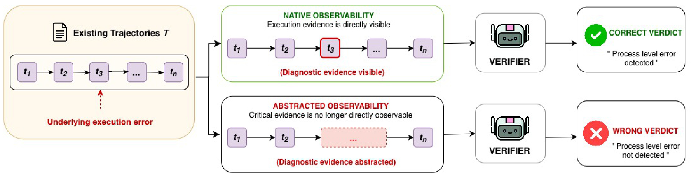
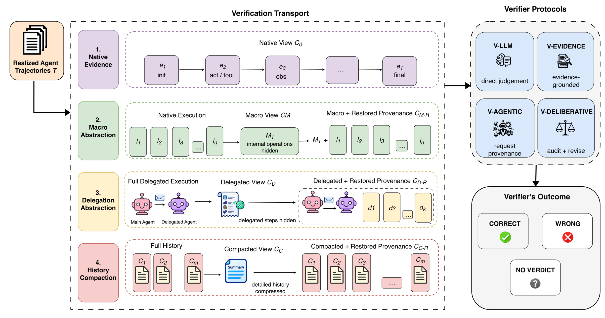
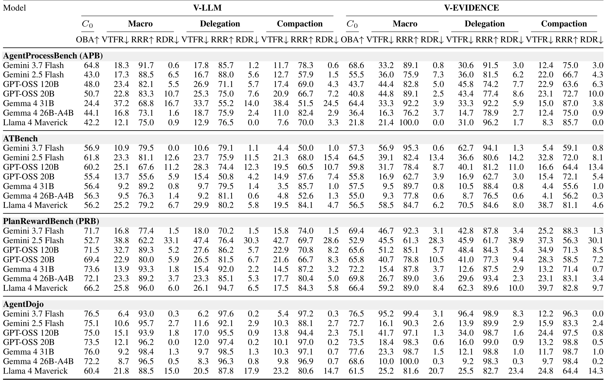
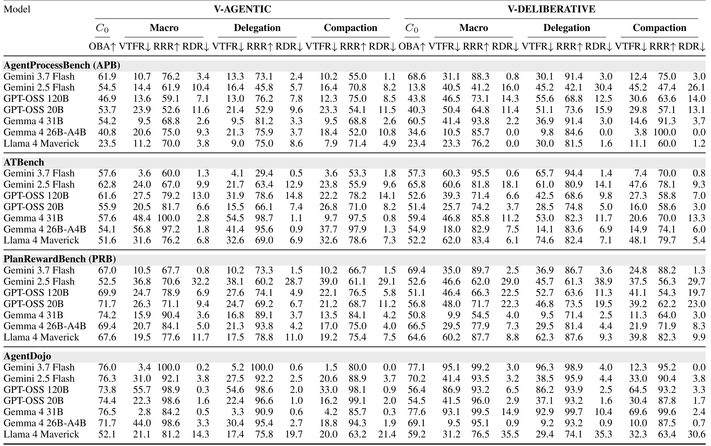
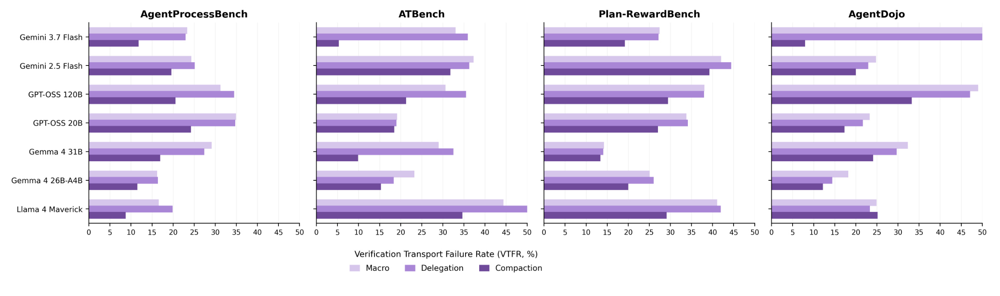
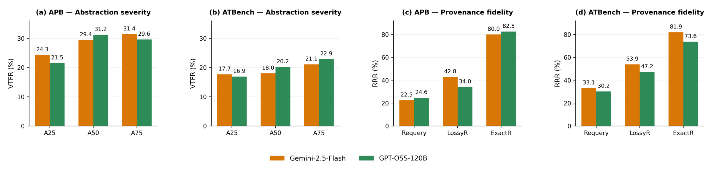
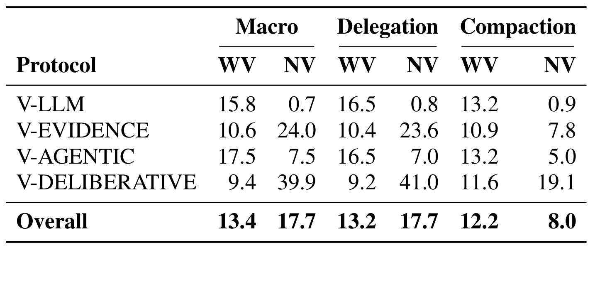
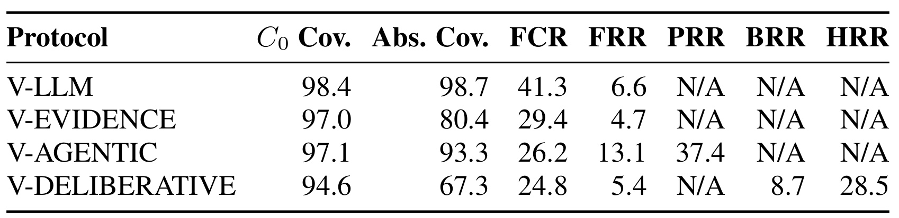
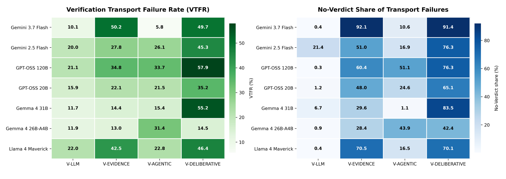
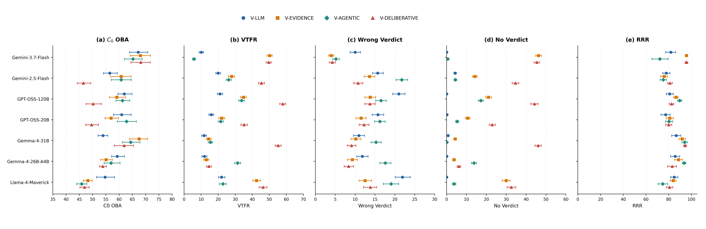

Do Verifier Judgments Survive Abstraction? / 核验判断能否跨越抽象边界
Disha Sheshanarayana 与 Sai Linisha Reddy Goli 均来自 Manipal University Jaipur。本文提出 Verification Transport：同一段已经发生的 Agent 执行，在原始日志、抽象视图和恢复证据后的视图中，核验者能否保持正确判断。论文首次提交为北京时间2026年11月14日01:44，唯一论文入口为 arXiv:2611.18471。作者声明被 NeurIPS 2026 的 Who Verifies the Agents? 工作坊接收，本轮未取得该论文的独立录用名单条目。作者在PDF列出的代码入口本轮返回404，尚不能视为可公开复现。
部署中的同一次执行可能被封装成宏操作、隐藏在委派边界之后，或变成压缩历史，核验者因此看到不同的执行证据。一个在原始视图中正确的判断，是否还能在这些抽象边界之后保持正确，仍不能由原生评估准确率回答。
1. 背景和问题
Agent的行为不是一段最终答复，而是任务、工具调用、返回结果与环境状态持续交替的过程。最终任务完成可以掩盖中间错误，最终失败也可能来自外部条件，而不是每一步都不合格。因此，过程核验需要读取执行轨迹，判断某个步骤是否合理、整个轨迹是否安全、两条轨迹哪条更好，或者某次执行是否遵循指定条件。只看结尾文本会漏掉这些差异，越来越多评价系统于是把语言模型放到核验位置，让它阅读步骤和证据，输出分数、偏好或通过与否。本文不研究怎样训练出更强的行动模型，而是追问核验判断本身所依赖的证据展示方式。
现有原生评估通常默认一条执行以固定格式呈现。模型获得基准原有的日志、任务说明与判定规则，准确率反映它在这个视图下能否识别正确标签。然而，部署时的系统边界往往不同。一个复杂工具可以把若干内部调用包进一次高级操作；主Agent可能只接收子Agent的返回摘要，看不到子Agent到底做过哪些验证；长任务的早期历史也可能被折叠，后续模块只收到紧凑记录。这些设计帮助管理复杂度与上下文预算，却同时改变了审阅者能直接看到的事实。把完整日志上的核验准确率直接搬到经过封装的生产轨迹，隐含了一个尚未验证的稳定性假设。
这里容易混淆两类问题。第一类是执行真的变了，例如工具实际没成功、子Agent重新运行失败，或者摘要后的行动者走了另一条路径。第二类是执行完全没变，但审阅者只看到不同的投影。本文刻意固定前者，隔离后者：任务、已实现轨迹、最终结果、真实标签、核验规则与模型保持不变，唯一变化是哪些执行事件可见。这样，如果核验结论发生变化，就不能用行动模型能力改善或环境随机性解释。实验对象是一组冻结记录的不同视图，而不是让Agent在三种上下文管理系统中各自执行一次任务。

图1左侧只有一条既有执行轨迹，红色节点表示其中已经发生的过程错误。上路保留诊断证据，核验者看到错误并给出正确判断；下路把相应区域抽象掉，执行错误仍然存在，但核验者可能不再识别。这张图的红色并不是新增的故障注入，也不是抽象让行动者犯了新错，而是同一旧错误在两种证据视图中的可发现性差异。右侧“正确”与“错误”描述核验结论相对真实标签的关系，不能把绿色勾号理解成底层Agent执行成功。图中演示的是明确误判，实际定义还包括没有返回可用结论；后者可能是谨慎弃权，也可能是格式或协议失效，运营含义需要进一步区分。
这项设置的价值是把“压缩后是否保留任务语义”细化为“压缩后是否还保留判定该执行所需的证据”。一段摘要可能足以让行动者继续下一步，却不足以让审计者确认此前有没有越权、是否真的读取了某个字段、是否经过必要检查。抽象接口通常只承诺输出结果，并不自动承诺所有内部过程都对外可见。因此，不能要求核验者从不存在的可见信息中推导出唯一结论，更不能把输出更长的解释当成证据补全。本文的恢复阶段正是用来检查：把同一次执行的原始事件重新暴露后，判断能否回来，而不是让模型自由猜测隐藏步骤。
它与一般的提示词敏感性研究也有区别。改写判定规则可能改变规则解释；改变任务表述可能改变模型对目标的理解；改变执行轨迹则可能需要新的真实标签。本文希望把这些因素固定，只改变执行证据的访问边界。宏操作对应一个操作内部的可见性，委派对应跨Agent边界的可见性，历史压缩对应时间跨度上的可见性。三者都是有部署对应物的抽象，但实验实现仍是可控转换，不等同于完整真实封装系统。尤其，论文中的委派条件不会真的启动一个新的子Agent，而是遮蔽已经存在的执行片段；这一点决定了结果应解释为核验稳健性，而非多Agent协作效果。
另一个动机是“强核验协议”可能产生相反的运营现象。直接给答案的核验者会在证据不足时继续判断，覆盖率看上去很高，却可能错放行；要求显式证据的核验者可能拒绝下结论，减少某类误判，同时使自动审计流程停在不可用状态。若只把所有失败压成一个数，便看不出系统是过度自信还是缺乏判断。本文把错误结论与无结论拆开，并同时报告原生能力、覆盖和恢复，目的是让这些取舍可见。更低的条件失败率不必然意味着更好的总体能力，因为不同协议原生判断正确的实例集合本身也可能不同。
对推荐工程，类似问题会出现在自动诊断、实验解释与模型上线验收的证据链中。一个训练任务“运行中”的摘要不能替代实际载入版本的日志；一个子工具“发送成功”的返回不能替代消费端成功载入的事件。这里是个人迁移判断，并非本文直接测试过推荐业务。可借鉴的是冻结同一执行、分别暴露摘要与原始事件的评估方式，以检查自动审阅是否受接口压缩影响；不能把本文的失败比例直接套到推荐生产系统。对于个性化记忆，摘要能否支持后续生成与能否支持事后核验也应分别验证，二者需要保留的信息未必一样。
还需注意，安全任务的通过与偏好任务的胜出不能共享一个正负标签解释。作者保留各基准的规范标签，再仅在能够一致定义正负判断的安全数据上分析错误认证和错误拒绝。这样，某个原生正确的偏好判断在抽象后改变，也属于运输失败，却不能称作一次危险行为被放行。诊断名称必须服从原始任务，不能因为都由语言模型评价就合并业务含义。
2. 方法
2.1 固定执行与成对的抽象—恢复视图
论文把已实现轨迹记为一个固定对象，在不同观察条件下只改变它的表示。形式上，核验输出是：
符号解释：$T$是冻结轨迹，$O_c$是在条件$c$下暴露执行证据的映射，$V$是同一个核验模型，$\hat Y_c$是它的输出；$y_i$为实例$i$的真实标签，$v_i^X$表示条件$X$是否产生合法任务结论，$c_i^X$同时要求结论合法且正确。没有可用结论用$\bot$表示，它不等于任何一个任务标签，也不会被算作正确。核心保存条件是原生视图判断正确后，抽象视图仍然正确。由此，研究重点从整体准确率变成正确判断在证据访问改变后的保留。
构造过程首先把原始记录规范化成按顺序排列的事件序列。宏抽象选择至少两个完整工具调用—返回对组成的连续块；委派抽象选择已有的完整执行块，至少包含一对调用与返回；历史压缩选择更早的区域，同时保留指定最近证据与最终工具调用—返回对。选中的事件被带稳定边界标识的标记替代，原事件保存在对应来源映射中。若找不到合法区域，实例被判为不适用，而不是随意删掉任意文字。所有转换要求确定性、标签盲、同一冻结来源以及可精确回指；恢复时重放的是记录内容，不会重新调用环境。

图2中间每一行都是同一底层轨迹的多个可见版本。原生行直接展示初始化、动作、观察和最终事件；宏行把内部操作藏进一个高级节点；委派行让内部轨迹退到被委派组件之后；历史行把早期事件换成压缩边界。每行右侧的恢复视图重新给出同一来源事件，因此它检验的是信息重新可见后的可恢复性。图右上四种协议处理这些视图，右下统一映射到正确、错误与无结论三种状态。图中的抽象不是训练时的特征增强，也没有把真实标签交给核验者修正答案。方法解释的关键连接是稳定边界标识：没有从抽象节点指向原事件的映射，所谓恢复就容易变成新的摘要或模型推测，便失去冻结执行的控制条件。原文附录算法要求检查任务、已实现执行、结果与真实标签不变，正是防止这个混淆。
框架没有引入一个专门学习的抽象恢复网络；可追溯来源由构造阶段保存，核验者面对的是不同证据条件。因而方法的可移植部分是评估协议与事件索引，不是一个下载后即可自动修复全部日志缺失的模型。恢复条件记为原生视图、抽象视图、抽象加恢复视图的顺序。精确恢复只是把隐藏信息补回，不会纠正底层Agent已经发生的错误，所以恢复后合理的核验结论仍可能是“失败”或“不安全”。论文另做有损恢复对照：只恢复操作顺序与工具身份，省略参数、返回和实际内容；再与只在同一抽象视图上重问一次比较。三者把“多给一次思考机会”与“给更多真实证据”分开。若后者恢复明显更好，支持信息可见性解释，但还不能保证每种线上摘要或所有工具接口都服从相同关系。
2.2 四种协议处理证据的方式
V-LLM是直接核验：单次阅读当前视图并返回结论，没有显式来源请求或二次审议。V-EVIDENCE先标出可见证据并判断是否充足，仍不能访问当前条件没有暴露的来源。这个协议增加了证据约束，而没有凭空扩展证据集。因此它可能通过弃权减少无依据断言，但也可能因为原生证据在抽象后不可见而失去覆盖。将两个协议比较时，应分别看原生判断能力、误判与无判断，而不是只看某个聚合指标。
V-AGENTIC允许在证据不足时请求当前边界的原始执行来源，返回内容仍来自同一冻结轨迹。它测试主动取证是否改善抽象稳健性。具有请求工具不代表一定会请求，也不代表请求后必然用对证据；请求率应与正确率联合看。V-DELIBERATIVE则复用对应V-EVIDENCE的冻结第一阶段答复，再做一次证据审议。第二阶段获得同一可见轨迹和第一阶段答复，不得到新的原始事件。第一阶段推理是已有判断材料，不是额外执行证据。它因而适合隔离再次审议的效果，而不能被当成另一个主动取证系统。
所有核验模型使用温度零和结构化输出，再映射到各基准的规范标签空间。多阶段协议评价最终任务结论，不能把第一阶段较好的结果与第二阶段最终结果挑着使用。四个协议没有训练一个统一的新奖励模型，它们是核验流程的不同实例。实验改变协议时，对应原生正确集合可能变化；即使模型骨干相同，条件失败率的分母也不再完全相同。这使“直接协议的失败率最低”与“直接协议总体最可靠”成为两个不同命题，后者还需要原生能力、语义错误方向与覆盖约束支持。
2.3 条件分母、错误分解与恢复指标
运输失败只在原生正确的判断中统计：
符号解释：$C_0$为原生条件，$C_a$为一种抽象条件，$c$是前述合法且正确指示量。分母不是全部轨迹，而是该协议在原生视图下已经判断正确的轨迹。分子要求这些原先正确的判断在抽象后变错或不可用。该量刻画正确判断的保留，不能替代总体准确率；一个原生能力低的协议可能只保留少数容易实例，得到较低VTFR。
符号解释：WV表示给出合法但错误的任务结论，NV表示没有合法结论，二者共享原生正确分母。显式弃权、未解决输出和协议非法响应都属于不可运营结果，却不应在语义层面混称为错误放行。不同失败路径可能需要人工升级、补证据或协议修复，单一运输率无法决定响应策略。
符号解释：$C_{a-R}$是相应来源恢复条件。RRR分母是抽象诱发失败集合，分子是其中恢复后重新合法正确的判断。它不是恢复后的总体准确率，不能把85.5%的恢复率描述为全部任务有85.5%正确；空条件集合按未定义处理。
符号解释：RDR分母换成原生和抽象视图都正确的判断，分子是这些判断在加回证据后反而失败。它衡量恢复引入的退化，和RRR不互为补数。两者分母不同，不能简单相减得到净收益百分点；应回到各组计数计算整体效果。
符号解释：$\mathcal Y$是真实类别集合，$N$是当前条件的全部实例数；OBA按类别召回宏平均并把不可用结论算错，Coverage度量可返回合法结论的比例。它们补充VTFR的条件视角。论文聚合率先相加分子与分母再相除，不是把每格百分比等权平均。跨基准的标签、有效实例和原生正确数不同，保持这一规则才不会用小分母格子任意影响总结果。
3. 实验结果
3.1 样本、协议与两组主表
实验覆盖四种核验任务：AgentProcessBench使用250条满足条件的实例，ATBench为758条工具使用轨迹，PlanRewardBench为441组轨迹比较，AgentDojo为754条轨迹。这些是满足匹配抽象构造条件的实例数，不代表各基准完整规模。前者针对指定消息的步骤标签，并非把整条轨迹所有步骤合成单一标签；偏好比较在合法时变换两条候选，否则仅变换适用的一条，保持偏好标签与候选顺序不变。四种任务能检验结果是否只来自某一种标签形式，但不能把它们合成一个具有统一业务语义的安全错误率。
七个核验骨干为Gemini-3.7-Flash、Gemini-2.5-Flash、GPT-OSS-120B、GPT-OSS-20B、Gemma-4-31B、Gemma-4-26B-A4B与Llama-4-Maverick。四种协议各自在原生、三类抽象与对应恢复条件下评价。全部结果来自作者实验，本轮未重新调用这些模型。主要聚合VTFR在宏抽象、委派和历史压缩下分别为31.0%、30.9%和20.3%。这意味着原生已经正确的判断中，约三成在前两类视图下失去正确可用性；不能据此声称Agent真实执行错误增加三成，也不能将它当成全样本错误率。

表1左半是V-LLM，右半是V-EVIDENCE；每半先列原生OBA，再按宏、委派、历史压缩分别列VTFR、RRR和RDR。四个数据集各有七行模型，读同一行才能保留骨干与任务条件。以AgentProcessBench的Gemini3.7为例，直接核验原生OBA为64.8，宏抽象VTFR为18.3，恢复率91.7，恢复退化0.6；证据协议对应原生OBA为68.6，宏抽象VTFR却达到33.2。这个例子不表示证据协议在原生下更差，而是它原生正确集合不同，并在隐藏证据后更容易失去可用判断。表中也有原生能力很低但条件运输失败较小的格子，提醒不能只按VTFR排序。恢复率普遍较高，说明大量错误随原始事件重新可见而可逆，但每格RDR并非全为零，更多信息仍可能扰动已正确判断。小样本条件率的不确定性另由附录成对bootstrap处理。
在跨基准与模型聚合后，V-LLM的三边界VTFR为16.4%、17.3%、14.1%；V-EVIDENCE为34.5%、34.0%、18.7%。直接判断的条件率较低，同时并不具备主动补证据能力，其错误往往是明确输出错误结论。证据协议在原始条件有时更准确，但证据被隐藏时更倾向于不作判断。因此比较“谁更可靠”要先确定业务接受什么代价：错误放行、错误拒绝、无结论转人工和额外取证成本各有不同权重，论文没有给出可以替业务代选的统一效用函数。
表中还要把恢复退化和抽象失败分开读取：即使某行恢复率很高，原生准确率也可能较低；即使退化显示为零，也只说明该格原先幸存集合中未观察到退化。论文没有为每格逐项列出原生正确数量，读者不能从四舍五入百分比恢复唯一整数计数。对于不同基准，步骤标签、成对偏好与安全标签的含义不同，表格共同列结构提供的是协议比较框架，而不是把它们变成同一种任务。

表2沿用完全相同的列结构，左侧主动取证，右侧二次审议。V-AGENTIC三类边界聚合VTFR为25.0%、23.6%、18.2%；V-DELIBERATIVE为49.3%、50.2%、30.7%，后者并未因为多一次审议自然提升稳定性。表中AgentDojo的Gemma4-31B尤其直观：主动取证原生OBA为76.5，宏VTFR为2.8；二次审议原生OBA为77.6，宏VTFR却为93.1。两者不是相同分母的效果差，但足以说明原生能力相近也不能保证跨视图表现相近。另一端，某些骨干的二次审议失败明显更低，不能把它概括为所有模型都同样受损。主动取证还需要模型决定是否请求以及如何使用返回事件，拥有请求接口没有消除全部失败。表格支持协议与证据访问共同影响判断，但不证明一个固定协议可以在全部部署环境上最优。
二次审议的最终结果来自第二阶段，第一阶段答复被冻结后交给审议者，不能选择两者中较正确的一个汇报。表里某些恢复条件出现很高退化，也提醒更多上下文可以改变先前充分支持的结论。主动取证的恢复阶段则与抽象条件下的可选请求不是同一个操作：前者按实验构造补回指定来源，后者还受模型是否请求的决策影响。不能仅用精确恢复总体成功率替代主动协议的实际效果。
论文报告，来源恢复总体修复85.5%的抽象诱发失败，同时使5.2%的原先幸存判断退化。按边界看，宏与委派恢复率为87.9%和86.9%，对应退化率5.3%和5.4%；历史压缩恢复率79.8%，退化率4.9%。这里的“幸存”是原生与抽象下均正确，不是所有未出错的底层执行。它说明恢复通常有帮助，但不能把一次加回全日志操作当成无风险修复，也不能把85.5减5.2当作整体净增80.3个百分点。
3.2 失败异质性与可控消融

图3四个横向分面对应四个基准，每行是同一个核验骨干，三色条分别是宏、委派与历史压缩。每根条已对四种协议按相关分母聚合，不能再把它解读成单一协议结果。宏和委派总体较高，但不同骨干、不同基准的差距明显；例如ATBench里部分模型的宏/委派条远长于压缩条，而其他基准中差距较窄。图的作用是检验表示敏感性是否只出现在一款模型或一个标签体系，结果显示并非单点现象。它并不说明规模越大一定越稳，因为模型家族、训练和协议组合同时不同，也没有用统一计算预算比较各核验器。跨分面比较还应注意各基准样本来源与原生正确条件集合，图中的百分比是相应集合上的运输率，不是单位任务风险的直接排行榜。
同一基准的条形长度还受到有效原生正确数量加权，不是四个协议简单算术平均。保留每个模型的分面有助于发现平均结果中的反例：某种抽象在一组模型上影响较弱，在另一组却可能最强。只给三条全局均值会丢掉这种部署时需要验证的组合信息。

图4前两幅固定模型和基准，依次隐藏约25%、50%、75%的合格语义证据原子，纵轴为VTFR。AgentProcessBench中Gemini2.5从24.3%到31.4%，GPT-OSS120B从21.5%到29.6%；ATBench对应从17.7%到21.1%、16.9%到22.9%。端点都上升，但A50并非每格严格单调，不能把三点画成普适线性规律。后两幅只在发生抽象失败的条件集合上看恢复：重新询问、恢复有损来源、精确来源依次比较。APB中Gemini恢复率22.5→42.8→80.0，GPT-OSS为24.6→34.0→82.5；ATBench也是精确来源最佳。两个消融分别改变隐藏量和恢复信息质量，而非增加行动模型训练；联合支持缺失执行信息这一解释。原子划分与抽象构造由作者协议决定，结果不能直接当作任意摘要压缩比例的效应曲线。
恢复消融尤其不能解释成重新运行工具得到了更好结果。原始工具状态和返回值已经冻结，精确恢复只是重新暴露这些事件；有损版本保留顺序和身份而删去参数与观察，因此三种对照回答的是何种证据内容有帮助。虽然精确来源在四个模型—基准组合的端点都最好，研究仍只有两个骨干、两个基准做这项定向消融，不能据此宣称任意语义任务都需要恢复全部历史。
3.3 错误结论、无结论与协议诊断

表4使用和VTFR一致的原生正确分母，因此每个边界的WV与NV可以相加。宏抽象的总体两项为13.4与17.7，委派为13.2与17.7，压缩为12.2与8.0；四舍五入会使显示值之和与31.0或20.3略有差异，不必替原文强行改数。直接协议的宏失败里15.8是错误结论，0.7是无结论；证据协议则为10.6与24.0。二次审议的NV在宏、委派达到39.9、41.0，错误结论分别9.4、9.2。要求证据可能减少明确误判，却增加流程无法自动出结论的比例，这不是同一种失败。主动取证介于两种形态之间，也仍有17.5的宏错误判断。若业务只把无结论转交人工，损失函数会不同于直接错放行；若业务要求每次审计自动闭环，低覆盖也是真实运行代价。表不能自行决定哪个更合适，而是提供制定代价时缺少的拆分分母。
具体到错误方向，表4的错误结论项没有区分危险放行与错误拒绝，必须继续看表5，且只有相应标签能够定义方向时才有意义。无结论也不是对底层轨迹重新贴上失败标签，而是核验流程没有可运营输出。这个分层避免把模型谨慎弃权与自信误判当作完全相同的安全行为。

表5的原生覆盖与抽象覆盖使用全部实例，和上表原生正确分母不同。V-LLM覆盖从98.4到98.7，V-AGENTIC为97.1到93.3，V-EVIDENCE从97.0降到80.4，V-DELIBERATIVE从94.6降到67.3。FCR与FRR只在ATBench和AgentDojo的正负标签有一致意义时统计：直接协议错误认证41.3，主动取证26.2，但主动取证错误拒绝13.1更高。这些条件语义指标不能与全部样本覆盖直接相减。主动取证在37.4%的抽象实例请求来源，宏与委派请求更多，说明系统确实会使用接口，却没有保证每次缺证据都触发。二次审议修复8.7%的初始错或不可用判断，同时损坏28.5%的初始正确判断，两项条件集合也不同。结果显示，仅把第一阶段理由再读一遍并增加审议，不等于引入新的执行证据，更不能把更长过程视为可靠性的充分证据。
错误认证的分母是在原始视图正确拒绝的真实负例，错误拒绝的分母是在原始视图正确接受的真实正例。因此，两列不能相加成为一个总体错误率，任何对业务风险的估计还需要正负例发生率。二次审议的有益与有害改判同样以不同初始状态为条件，需要保留各自计数才能计算净效用。
3.4 模型—协议交互与不确定性

左热图是各模型协议的分母加权VTFR，右热图是该格运输失败中无结论的比例，右图换了分母，不能把同一颜色理解成同样多的全部实例。Gemini3.7在V-LLM条件VTFR为10.1，V-DELIBERATIVE为49.7，而后者91.4%的失败是无结论；GPT-OSS120B的审议VTFR为57.9，其中76.3%是无结论。Gemma4-26B-A4B审议VTFR仅14.5，明显不同于Gemma4-31B的55.2，说明协议效果与骨干发生交互。右图主动取证的无结论占比同样异质：有的模型很低，有的超过一半。把所有协议平均会遮蔽这些组合行为，因此实际使用前应固定模型版本和协议再验收。热图是相应冻结基准上的经验模式，并不证明模型参数量、推理长度或某个架构模块是造成差异的单一因素，也不能据此预测一次新模型升级的全部表现。
热图左侧同一列的深色表示该协议在相应模型的原生正确集合中更易失败，右侧深色则只表示失败更常表现为无结论。两图可以共同解释同一格为何较差，却不能用右图低值证明系统正确：错误判断占比高同样可能对应很低的无结论比例。

图6依次给出原生OBA、VTFR、错误判断、无判断与恢复率，颜色/形状区分四协议，各行仍是七个骨干。点是加权估计，水平误差条是95%置信区间。作者在每个基准内部按轨迹重采样，并将同一轨迹所有观察条件一起保留，从而维护原生、抽象与恢复的配对关系；若把三个视图独立抽样，就会破坏本文最重要的控制条件。图中不同指标的横轴与方向不同，原生准确率和恢复率越高越好，失败分项越低越好。它提供对主模式的不确定性感知，不能通过肉眼读取细误差条宣称任意两格都显著不同。原文没有给出所有协议差值的统一配对检验表，本轮也没有获得原始输出重算区间。区间覆盖的仍是这些冻结样本的抽样波动，不能包含线上新工具接口、不同抽象器或不可恢复日志造成的分布变化。
效率方面，论文没有系统报告四协议的token、API开销、额外取证延迟或人工升级成本。故可以说主动请求证据具有改善某些错误认证的潜力，不能进一步声称它在相同成本下最优。安全方面，来源恢复假设原记录可信且可访问；真正部署中的来源可能含敏感字段、权限限制或被污染的工具返回，本文没有把这些风险纳入四基准主结果。恢复更多内容可能增加判断所需证据，也可能增加攻击面和负载，实际设计需要选择性取证并验证来源身份。
4. 总结
这篇论文最有用的贡献是提供一个可操作的核验稳定性问题，而不是又造一个只有单分数的判断排行榜。固定执行再改变证据视图，使“行为本身错了”和“审阅者看不到证据”可以分开诊断。原生评估仍然必要，因为一个从来判断不对的核验者没有可保留能力；运输评估在此基础上检验正确判断的保持。二者应联合使用，不应该因某个条件失败率低就忽略原生能力。恢复阶段进一步表明，很多失败能够随精确来源重新出现而逆转，但恢复退化说明补证据也应有回归检查。
对工程验收，我更倾向于把同一真实执行的原始日志、实际生产摘要以及按需恢复的来源组成一个固定回放集。先核对任务与真实标签在三视图中不变，再看原生OBA、三种条件失败分解、抽象后覆盖，以及取证后的恢复与退化。若要比较两种核验流程，还应同时报告各自原生正确集合及交集，避免仅比较不同条件集合的百分比。推荐系统的自动实验解读也可采用这种方式：保留模型版本、数据窗口、运行日志与结论的可追溯关系，让摘要丢失哪些证据成为可检测问题。这是迁移建议，本论文并没有在推荐线上系统实测。
局限首先在于转换是冻结轨迹上的受控遮蔽，实际宏操作与子Agent可能只保存部分内部事件，线上摘要也可能改变事实表达，不能假设精确恢复总是可用。其次，四基准覆盖过程、偏好与安全，但任务分布、工具schema和真实标签质量仍有限；某些实例因构造条件被排除，结果不代表所有执行。第三，VTFR只分析原生正确子集，跨协议比较有选择效应，必须同时看原生能力与覆盖；无结论里也可能混合主动弃权和输出格式失败。第四，七个骨干和四协议不能代表未来模型，温度零也没有消除模型服务版本漂移。第五，缺少完整成本与受限权限取证实验，不能从恢复率推导生产性价比。第六，代码入口本轮404，暂时无法独立审计转换实现、原始输出和bootstrap细节，作者所报恢复优势应保留复现边界。
若上线核验系统已经使用宏工具或委派组件，应保存稳定事件标识以及相应来源权限，避免恢复时混入另一次运行的相似日志。核验流程升级也需要固定旧回放集，把增加证据后的退化纳入回归，而不是只检查成功恢复的案例。
后续优先做三件事。第一，等公开代码和匹配来源索引可用后，检查抽象转换是否确定、标签盲、保留顺序，并人工抽查恢复确实来自同一次执行；这是验证控制变量的基础。第二，复现时固定模型版本、规范标签解析与失败分类，分别输出WV、NV、覆盖及各条件分子分母，检查不可用结论究竟来自弃权还是协议错误；这样才能决定是否需要人工升级。第三，在实际封装工具和真实历史摘要上构建新的配对样本，同时加入取证预算、权限与来源可信度约束，比较选择性恢复和全量恢复。若只重复询问相同摘要，可能增加有害改判，不能把额外审议当作默认修复。完成这些核验后，才适合判断该方法能否服务具体Agent或推荐业务的自动审阅。